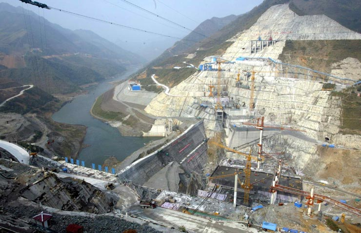

广西重点工程“西电东送”重要项目之一——平班水电站已于2005年8月全部建成投产。该工程总投资20.73亿元,总装机容量405MW,年平均发电量16.03亿千瓦时。
中国与东盟各国连接最便捷的陆路通道，广西第一条沥青混凝土高速公路---南宁至友谊关高速公路于2005年底建成通车，总投资37.14亿元，全长１７９．２公里

我国在建第二大水电站——龙滩水电站，总装机容量6300MW，目前正加紧大坝主体工程施工。装机规模为72万千瓦，总投资为6.16亿美元的广西来宾电厂B，是我国引进BOT方式的一个里程碑，为我国利用BOT方式提供了宝贵的经验。
金秀瑶族自治县结合社会主义新农村建设，把扶贫异地安置及灾后重建等项目作为“民心工程”来抓。新村建设配套了沼气池、自来水、广播电视“村村通”等。
2005年，广西横县投入1163.74万元用于基层公共卫生设施建设，20个乡镇卫生院面貌一新。
引进项目，海螺集团在广西兴业投资15亿元兴建的海螺5000t/d新型干法水泥熟料生产线(一线)于7月竣工投产。
实施农村中小学现代远程教育基础工程项目，是促进农村教育跨越式发展的重大举措。2005年，凭祥市对51 个项目进行了实施,共投入资金97.1万元。